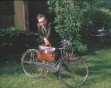

Please note: the AAS Obituaries are temporarily being hosted on this website while their full content is being ingested into the PubPub publishing platform newly adopted by the Bulletin of the American Astronomical Society. When the migration is complete, your existing links will take you to the final, migrated content. Contact peter.williams@aas.org with any questions.
Brian G. Marsden (1937-2010)
Brian Geoffrey Marsden was born on 1937 August 5 in Cambridge, England. His father, Thomas, was the senior mathematics teacher at a local high school. It was his mother, Eileen (nee West), however, who introduced him to the study of astronomy, when he returned home on the Thursday during his first week in primary school in 1942 and found her sitting in the back yard watching an eclipse of the sun. Using now frowned-upon candle-smoked glass, they sat watching the changing bite out of the sun. What most impressed the budding astronomer, however, was not that the eclipse could be seen, but the fact that it had been predicted in advance, and it was the idea that one could make successful predictions of events in the sky that eventually led him to his career.
When, at the age of 11, he entered the Perse School in Cambridge he was developing primitive methods for calculating the positions of the planets. He soon realized that earlier astronomers had come up with more accurate procedures for doing this over the centuries, and during the next couple of years this led to his introduction to the library of the Cambridge University Observatories and his study of how eclipses, for example, could be precisely computed. Together with a couple of other students he formed a school Astronomical Society, of which he served as the secretary. At the age of 16 he joined and began regularly attending the monthly London meetings of the British Astronomical Association. He quickly became involved with the Association's Computing Section, which was known specifically for making astronomical predictions other than those that were routinely being prepared by professional astronomers for publication in almanacs around the world. Under the watchful eyes of the director and assistant director of the Computing Section, this led him to prepare and publish predictions of the occasions when one of Jupiter's moons could be seen to pass directly in front of another. He also calculated the gravitational effects of the planets on the dates and sky positions of the returns of some periodic comets. He carried out these computations using seven-place logarithms. After all, this was long before pocket calculators had been invented, and the construction of large electronic computers was still then very much in its infancy. He always maintained that making such computations by primitive means significantly increased one's understanding of the science involved. During his last year of high school he also became a junior member of the Royal Astronomical Society.
He was an undergraduate at New College, University of Oxford. In his first year there he persuaded the British Astronomical Association to lend him a mechanical calculating machine, allowing him thereby to increase his computational productivity. By the time he received his undergraduate degree, in mathematics, he had already developed somewhat of an international reputation for the computation of orbits of comets, including new discoveries. He spent part of his first two undergraduate summer vacations working at the British Nautical Almanac Office. He also responded to an inquiry from Dorothy L. Sayers involving the ancient Roman poet Lucan. Incensed by what she perceived as grossly unfair criticism of Lucan by A. E. Housman and Robert Graves, she elicited his assistance during the last year of her life to support her view that Lucan's understanding of astronomy and geography was reasonably valid. Dr. Sayers' extensive correspondence in the course of this study is included in the last volume of her collected letters.
After Oxford, he took up an invitation to cross the pond and work at the Yale University Observatory. He had originally planned to spend just a year there carrying out research on orbital mechanics, but on his arrival in 1959 he was also enrolled as a Yale graduate student. With the ready availability of the university's IBM 650 computer in the observatory building, he had soon programmed it to compute the orbits of comets. Recalling his earlier interest in Jupiter's moons, he completed the requirements for his Ph.D. degree with a thesis on "The Motions of the Galilean Satellites of Jupiter".
At the invitation of director Fred Whipple, he joined the staff of the Smithsonian Astrophysical Observatory in Cambridge (MA) in 1965. Dr. Whipple was probably best known for devising the "dirty snowball" model for the nucleus of a comet a decade and a half earlier. At that time there was only rather limited evidence that the motion of a comet was affected by forces over and above those of gravitation (limited because of the need to compute the orbit by hand), and the Whipple model had it that those forces were due to the comet's reaction to vaporization of the cometary snow or ice by solar radiation. Dr. Marsden therefore developed a way to incorporate such forces directly into the equations that governed the motion of a comet. Application of a computer program that included these nongravitational effects to several comets soon gave results that were nicely compatible with Dr. Whipple's original idea. Continued refinement of the nongravitational terms, much of it done in collaboration with Zdenek Sekanina, a Czech astronomer and friend of Dr. Marsden whom he and Dr. Whipple succeeded in bringing to the U.S. as a refugee following the Soviet invasion of Prague in 1968, resulted in a wealth of improved computations of cometary orbits by the time Dr. Sekanina moved to California in 1980. It is noteworthy that the procedure devised and developed by Dr. Marsden is still widely used to compute the nongravitational effects of comets, with relatively little further modification by other astronomers.
The involvement of the Smithsonian Astrophysical Observatory with comets had been given a boost, shortly before Dr. Marsden's arrival there, by the transfer there from Copenhagen of the office of the Central Bureau for Astronomical Telegrams, a quaintly named organization that was established by the International Astronomical Union soon after its founding in 1920. The CBAT is responsible for disseminating information worldwide about the discoveries of comets, novae, supernovae and other objects of generally transient astronomical interest. It is the CBAT that actually names the comets (generally for their discoverers), and it has also been a repository for the observations of comets to which orbit computations need to be fitted. Dr. Marsden succeeded Dr. Owen Gingerich as the CBAT director in 1968. He was joined by Daniel Green as a student assistant a decade later, and Dr. Green took over as CBAT director in 2000. Until the early 1980s the Bureau really did receive and disseminate the discovery information by telegram (with dissemination also by postcard Circular), although e-mail announcements then understandably began to take over. The last time the CBAT received a telegram was when Thomas Bopp sent word of his discovery of a comet in 1995. Since word of this same discovery had already been received from Alan Hale a few hours earlier by e-mail, the object was very nearly just named Comet Hale, rather than the famous Comet Hale-Bopp that beautifully graced the world's skies for several weeks two years later.
The comet prediction of which he was most proud was of the return of comet Swift-Tuttle, which is the comet associated with the Perseid meteors each August. It had been discovered in 1862, and the conventional wisdom was that it would return around 1981. He followed that line for much of a paper he published on the subject in 1973. He had a strong suspicion, however, that the 1862 comet was identical with one seen in 1737, and this assumption allowed him to predict that Swift-Tuttle would not return until late-1992. This prediction proved to be correct, and this comet has the longest orbital period of all the comets whose returns have been successfully predicted.
Although the CBAT also traditionally made announcements of the discoveries of asteroids that came close to the earth, the official organization for attending to discoveries of asteroids (more than 99% of which are located in a belt between Mars and Jupiter) is the Minor Planet Center. Also operated by the International Astronomical Union, the MPC was located until 1978 at the Cincinnati Observatory. In that year the director, Dr. Paul Herget, was retiring, and it was necessary for the Center to find a new home. Accordingly, the IAU asked Dr. Marsden also to take over the direction of the MPC. Thanks to the transfer of associate director Conrad Bardwell with the MPC records from Cincinnati, this task was rendered easier. While the CBAT and the MPC still maintained their separate entities, there was a lot of common ground between them. Dr. Marsden was therefore able to introduce some efficiencies into their combined operation. On Mr. Bardwell's retirement at the end of 1989, Gareth Williams joined the MPC staff and later became associate director.
The advances in electronic communication during the 1990s also permitted improvements in MPC operation. Perhaps the most important of these was the development, in 1996, of the Internet "Near-Earth Object Confirmation Page". This draws attention to candidate earth-approaching objects in need of follow-up observations as soon as they have been reported to the MPC, following the derivation by Dr. Marsden of a particularly ingenious method for estimating the uncertainty of the prediction by automatically computing a series of orbits that represent just the first and the last observations. In 1998 he developed a certain amount of notoriety by suggesting that an object called 1997 XF11 could collide with the earth. He did this as a last-ditch effort to encourage the acquisition of further observations, including searches for possible data from several years earlier. The recognition of some observations from 1990 made it quite clear that there could be no collision with 1997 XF11 during the foreseeable future. Without those 1990 observations, however, the object's orbit would have become very uncertain following a close to moderate approach to the earth in 2028; indeed, Dr. Marsden correctly demonstrated that there was the possibility of an earth impact in 2040 and in several neighboring years. He was thereby able eventually to persuade his principal critics routinely to perform similar uncertainty computations for all near-earth objects as they were announced. Again, as more data accrue, it is almost certain to happen that all possible impacts with moderately large objects (i.e., those at least several hundred feet across) during the next century, say, will disappear. While the production of such computations was directly due to his encouragement, it was always with some amusement that he saw cases where further data forced his former critics sheepishly to withdraw their earlier frightening statements about a potentially dangerous object.
Dr. Marsden was particularly fascinated by the appearance of a group of comets that passed close to the sun. Known as members of the Kreutz group, after a German astronomer who studied them in the late nineteenth century, the discovery of three more of these sungrazing comets in the mid-twentieth century led him to undertake a detailed examination of how the individual comets may have evolved from each other. He published this examination in 1967, following it up with a further study in 1989 involving a more recent bright Kreutz comet, as well as several much fainter objects that had been detected from sun-observing coronagraphs out in space. Beginning in 1996, these were being found by the SOHO coronagraphs at rates ranging from a few dozen to more than one hundred per year. Unfortunately, the faintness of the comets and the poor accuracy with which they could be measured made it difficult to establish their orbits as satisfactorily as Dr. Marsden would have liked. More significantly, however, he was able to recognize that the SOHO data also contained another group of comets with similar orbits, these comets now known as members of the "Marsden group". Unlike the individual Kreutz comets, which have orbital periods of several centuries, it seems that the Marsden comets have orbital periods of only five or six years, leading him to try and recognize the same object at different passages near the sun and thereby predict future returns. Two other well-populated groups have also been detected in the SOHO data.
Another series of astronomical discoveries that greatly interested him were what he always called the "transneptunian objects", although many of his colleagues have insisted on calling them "objects in the Kuiper Belt". When what those same colleagues considered to be the first of these was discovered in 1992, Dr. Marsden immediately remarked that this was untrue, because Pluto, discovered in 1930 and admittedly somewhat larger in size, had to be the first. More specifically, he was the first to suggest, correctly, that three further transneptunian objects discovered in 1993 were exactly like Pluto in the sense that they all orbit the sun twice while Neptune orbits it thrice. This particular recognition set him firmly on the quest to "demote" Pluto. Success required the discovery of transneptunian objects more comparable to Pluto in size, something that finally happened in 2005 with the discovery of the object that came to be known as Eris. At its triennial meeting in 2006 in Prague, the IAU voted to designate these objects, together with two further transneptunian objects now known as Makemake and Haumea, as well as the largest asteroid, Ceres, members of a new class of "dwarf planet".
It was also at the IAU meeting in Prague that Dr. Marsden stepped down as MPC director, and he was quite entertained by the thought that both he and Pluto had been retired on the same day. While he remained working at the MPC (and also the CBAT) in an emeritus capacity, the directorship was passed to Dr. Timothy Spahr, whom he had brought to the MPC in 2000.
Dr. Marsden served as an associate director of the Harvard-Smithsonian Center for Astrophysics (the combination of the Smithsonian Astrophysical Observatory and the Harvard College Observatory) for 15.75 years from the beginning of 1987 (the longest tenure for any of the Center's associate directors). He was chair of the Division of Dynamical Astronomy of the American Astronomical Society during 1976-1978 and president of the IAU commissions that oversaw the operation of the minor Planet Center (1976-1979) and the Central Bureau for Astronomical Telegrams (2000-2003). He continued to serve subsequently on the two solar-system nomenclature committees of the IAU, being the perennial secretary of the one that decides on names for asteroids. He also continued to publish a "Catalogue of Cometary Orbits," the first of these having appeared in 1972 and its successors roughly at intervals of two years.
Among the various awards he received from the U.S., the U.K. and a handful of other European countries, the ones he particularly appreciated were the 1995 Dirk Brouwer Award (named for his mentor at Yale) of the AAS Division on Dynamical Astronomy and the 1989 Van Biesbroeck Award (named for an old friend and observer of comets and double stars), then presented by the University of Arizona, now by the AAS, for service to astronomy.
Dr. Marsden married Nancy Lou Zissell, of Trumbull, Connecticut, on 1964 December 26, and fathered Cynthia (who is married to Gareth Williams, still MPC associate director), of Arlington, Massachusetts; and Jonathan, of San Mateo, California. There are three Californian grandchildren, Nikhilas, Nathaniel and Neena. A sister, Sylvia Custerson, continues to reside in Cambridge, England.
From material written by Brian Marsden, edited by Gareth Williams, Cynthia Marsden, and HAD. First posted by the Minor Planet Center on 18 November 2010 as Minor Planet Electronic Circular 2010-W10.
Caption: Gene Malone's photo of Marsden taken during their years as graduate students at Yale.
Obituary written by: Gareth V. Williams (Harvard-Smithsonian Center for Astrophysics), Cynthia Marsden (Arlington, Massachusetts)
Additional links:
BAAS Citation: BAAS, 2011, 43, 027
SAO/NASA ADS Bibcode: 2011BAAS...43..027W